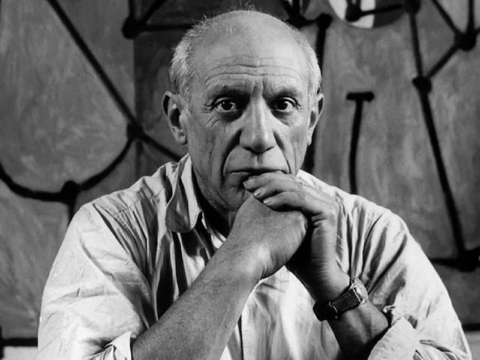

Pablo Picasso
Pablo Ruiz Picasso (25 October 1881 – 8 April 1973) was a Spanish painter, sculptor, printmaker, ceramicist, and stage designer who spent most of his adult life in France. Known for co-founding the Cubist movement, inventing constructed sculpture, and developing collage as a distinct artistic process, Picasso is widely regarded as one of the most influential artists of the 20th century.
Guernica
Created in 1937, *Guernica* is one of Picasso's most powerful anti-war paintings. It was painted in response to the bombing of Guernica, a Basque town, during the Spanish Civil War. The monochromatic piece captures the horror and suffering caused by war, depicting twisted human and animal forms in a chaotic scene.

Les Demoiselles d'Avignon
Completed in 1907, *Les Demoiselles d'Avignon* is considered one of the earliest examples of Cubism. This painting portrays five nude women with disjointed, angular bodies and mask-like faces, challenging traditional representation in art and breaking ground for modernism.

Weeping Woman
Painted in 1937, *Weeping Woman* depicts a woman in deep distress. This work is often seen as a continuation of the themes in *Guernica*, reflecting the anguish of war and human suffering, represented through fragmented and vivid shapes that capture intense emotion.

The Old Guitarist
Part of Picasso’s Blue Period, *The Old Guitarist* (1903-1904) portrays an elderly, emaciated man playing a guitar. The painting's melancholic tone, with blue hues, represents themes of poverty and isolation, making it one of his most moving works from this period.